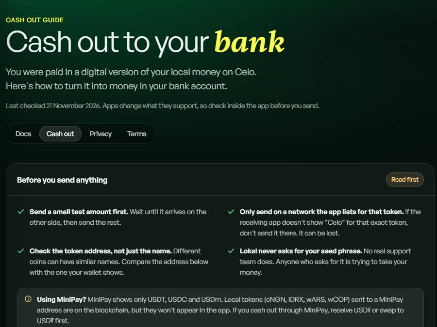

Send dollars. They receive their lokal money.
Pay anyone by their @tag or a link, from your own wallet. They get naira, rupiah or pesos in theirs, and you see exactly how much before you send.
They receive, after the conversion fee:
An estimate from Textile FX's live price, rounded down. Every payment gets its own firm quote when it is paid.
Sending money home costs too much and takes too long.
- Fees
A transfer fee up front, and often another one hidden in the exchange rate.
- Weak rates
The rate you are shown is rarely the rate they get.
- Delays
Days in transit, with no clear way to see where the money is.
- Declined cards
Local cards are often declined or capped for payments in dollars.
You pay.
A contract checks.
They get paid.
- Pay a @tag or a link from your own wallet.
Open someone's Lokal tag, like lokalpay.vercel.app/@ada, or a payment link they sent you. Choose what they receive and see the amount before you send.
- The contract checks the limits, and the agent converts on Textile FX.
The LokalTags contract refuses a payment over a limit before any money moves. Lokal's agent then takes a firm Textile FX quote and converts your dollars.
- They receive local money in their own wallet.
The agent pays exactly what the conversion delivered, never an assumed amount, with a receipt anyone can check.
The payer chooses what they receive.
Every currency is a stablecoin on Celo, priced live by Textile FX against USD₮. Nobody has to pick a currency to sign up.
- NigeriaNairacNGN…per $1Built, not yet used on mainnet
- IndonesiaRupiahIDRX…per $1Built, not yet used on mainnet
- ArgentinaArgentine pesowARS…per $1Built, not yet used on mainnet
- ColombiaColombian pesowCOP…per $1Built, not yet used on mainnet
Or dollars (USD₮) for anyone who would rather keep dollars. See today's quote
All of it, labelled honestly.
- LiveUsed with real money on Celo mainnet.
- Built, not yet used on mainnetThe code and tests exist. No real payout yet.
- PlannedNot built yet.
Sending
- Get a quote
A free, live Textile FX price for every currency.
- Pay a Lokal tag
Open /@name, choose what they receive, pay from your wallet.
- Pay a link
Pay the exact amount someone asked for, in one step.
- The
lokalcommand linePay a tag from PowerShell, with an encrypted wallet of your own.
- Pay with CELO
Pay from the CELO in your wallet; it is converted to dollars first.
Receiving
- Claim a Lokal tag
A short name like @ada that pays your own wallet.
- Get paid links
Ask for an exact amount in the currency you want, by link or QR code.
- Pay for me
Send a link with a title and a note, so someone else can pay it for you.
- Any currency
Naira, rupiah, pesos or dollars: the payer picks on each payment.
- Add the token to your wallet
One button, so what you receive shows in your wallet.
- Cash-out guide
How to get each currency to a bank, checked route by route.
Safety & proof
- Contract limits
LokalTags and LokalPots refuse over-limit payments before money moves.
- Refunds
A payment the agent can't pay goes back to the wallet it came from.
- Receipts
Every payout gets a number anyone can rebuild from Celo.
- Verify a transaction
Paste any Celo transaction to check it and its tag.
- ERC-8004 identity and ratings
The agent's onchain identity, and ratings from people it paid.
- Attribution tag
Every transaction carries Lokal's ERC-8021 tag, so it can be counted.
- Autopilot status
Whether the agent is running, and when it last checked in.
Developers
- Open source
The site, the agent and the contracts, MIT licensed.
- The CLI
Install with one line in PowerShell; dry runs send nothing.
- Contracts on Celoscan
LokalTags and LokalPots, source verified.
- Docs
How a payout runs, the limits, the addresses.
Coming next
- Pots
One link and QR code for many payers: weddings, birthdays, group gifts. The contract is live; the pages are next.
- “Who am I paying?”
The tag's age and history before you pay, with a warning for a first-time payee.
- MiniPay mode
Claim a tag and get paid without leaving MiniPay.
The contract says no before money moves.
Limits are not a promise on a web page. They are written into two contracts on Celo, and anyone can read them.
Your keys stay yours
Every payment is sent from your own wallet. Lokal never sees your keys, and the agent holds money only while it converts it.
Limits, enforced in code
$25 per payment and $25 per person per day: the contract refuses a payment over these before any money moves. The agent adds its own cap of $100 a day overall.
Refunds
If the agent can't pay a payment that arrived, it is recorded and can be sent back to the wallet it came from, in the same token.
Receipts you can check
Every payout has a receipt number taken from its transaction, so anyone can rebuild it from the chain.
From wallet to bank, one currency at a time.
The cash-out guide gives a checked route for each currency, as of 21 November 2026. Rupiah can be redeemed officially. For naira and Colombian pesos, no exchange takes them on Celo yet, so the guide shows how to swap to dollars first.
MiniPay shows only USDT, USDC and USDm. If you cash out through MiniPay, ask to be paid in dollars.

What's real today.
No made-up numbers. The payouts below are read from Celo when you open this page.
- LiveThe LokalTags and LokalPots contracts, deployed and source-verified on Celo mainnet. No real user payout yet.
- Built, not yet used on mainnetPayouts in naira, rupiah and pesos, Lokal tags, paying and claiming through the contracts, payment links, Get paid, autopilot, refunds, the
lokalcommand, receipts and ratings, and the cash-out guide. - PlannedPots on the site, “Who am I paying?”, Pay with CELO, Pay for me, MiniPay mode.
Real payouts
Reading the agent's payouts from Celo…
Read it, run it, pay from a terminal.
The site, the agent and both contracts are open source. Hundreds of tests run on every push, and the site only deploys when they pass. The lokal command pays a tag from your own encrypted wallet and never touches the agent's key.
# install the lokal command (Node.js 20+) PS> irm https://lokalpay.vercel.app/install.ps1 | iex PS> lokal wallet new PS> lokal whois ada PS> lokal send ada 10 --to rupiah --dry-run
--dry-run shows the exact transaction and sends nothing.Asked, and answered plainly.
What does it cost?
Lokal charges no fee today. You pay Celo's network fee for your own transaction, usually well under one US cent, and the rate you see already includes Textile FX's conversion fee. A small fee is planned; it will be shown on every quote before you pay.
Which wallet do I need?
Any Celo wallet, such as MetaMask or MiniPay. To pay, you need USD₮ on Celo and a few cents of CELO for the network fee (some wallets, like MiniPay, take the fee in dollars instead). Your wallet is also your Lokal account: there is no email and no password.
Can I receive in MiniPay?
MiniPay shows only USDT, USDC and USDm, so naira, rupiah and peso tokens won't appear there. If you use MiniPay, ask to be paid in dollars, or use a wallet such as MetaMask for local money.
What if my payment is refused?
Most refusals happen before money moves: the page asks the contract first, explains the reason, and nothing is sent. If the agent refuses a payment after it arrives, it is recorded and can be sent back to the wallet you paid from; your payment then shows "Refunded" with its transaction.
Does Lokal hold my money?
No. You pay from your own wallet and the recipient is paid into theirs. The contracts never hold money: each payment goes straight to the agent's payout wallet, which holds it only while it converts on Textile FX.
Which countries can I send to?
Nigeria (naira), Indonesia (rupiah), Argentina and Colombia (pesos), or dollars to anyone. Textile FX also lists Brazil and Mexico, but they had no quote on 21 November 2026, so Lokal doesn't offer them yet.
Do I need an account to pay someone?
No. Paying a tag or a link needs only your wallet. You sign in only to get paid, and signing in is a free signature that sends nothing.
Is it live?
The contracts are live on Celo mainnet. Payouts are built and tested against live Textile FX quotes; the first real payout will be listed under Proof with its transaction.